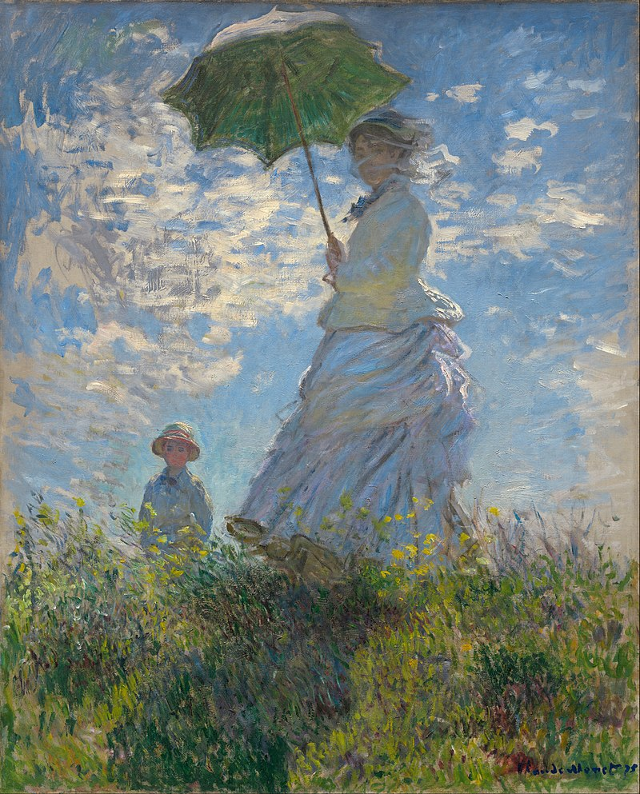
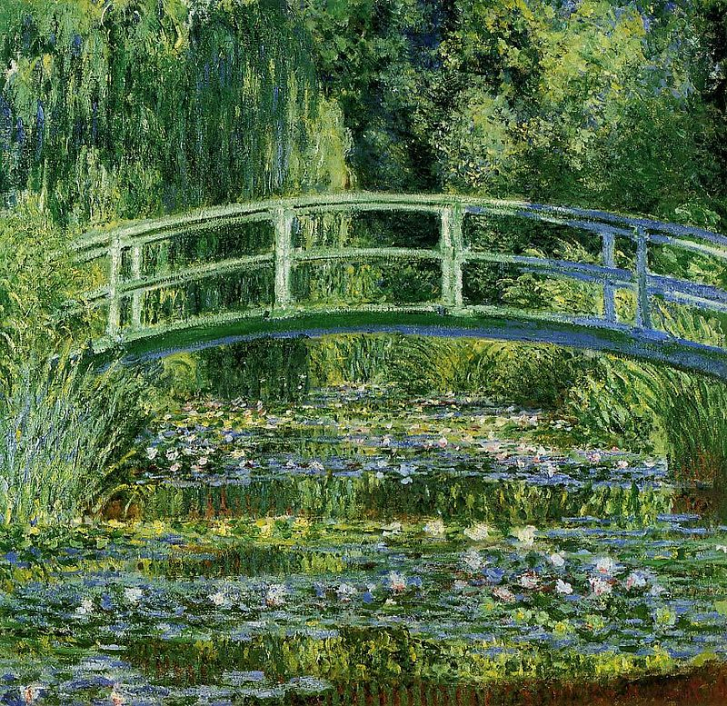
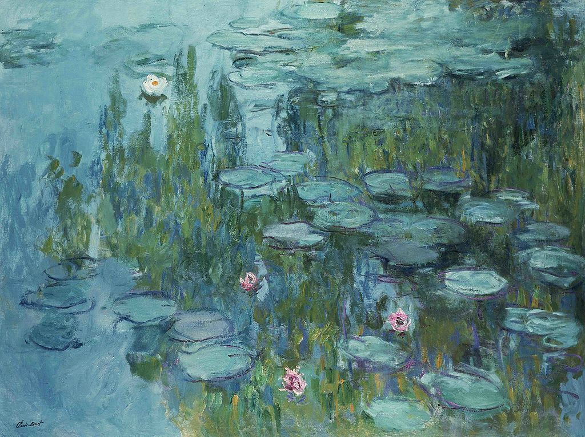
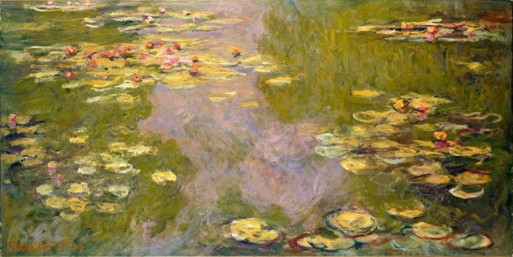

Impression, Sunrise, 1872.
At the first exhibition, in 1874, Monet displayed, among others, Impression, Sunrise, The Luncheon and Boulevard des Capucines. The art critic Louis Leroy wrote a hostile review. Taking particular notice of Impression, Sunrise (1872), a hazy depiction of Le Havre port and stylistic detour, he coined the term "Impressionism".

2

3

4

5